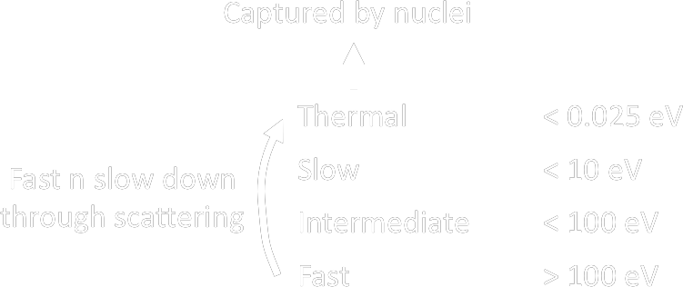
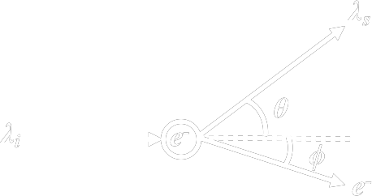

| Photon | Elastic Scattering (Coherent/Rayleigh) |
\[ \large \sigma \propto {Z \over E^2} \] |
= Inbound photon interacts with orbital e × significant to energy transfer ✓ contribute to attenuation |
| Photoelectric | \[ \large \tau \propto {Z^3 \over E^3} \] |
Mechanism
Auger Electron
Fluorescent Yield (w)
\[ \Large w = \frac{N_{characteristic~photon}}{N_{inner~shell~e^-~vacancy}} \]
|
|
| Compton |
\[ \large \sigma \propto {\rho_e \over E} \]
\(\rho_e\) = electron density
|
Mechanism
Angle of the scattered photon
\[ \large \lambda_s - \lambda_i = \frac{h}{m_e c}(1-cos\theta) \]
derivation
∴ maximum transfer when scattered photon @ 180°
e- released at 0°
|
|
| Pair Production | \[ \large \kappa \propto Z~E \] |
photon > e+ + e- near nucleus * due to momentum conservation > e+ > annihilation with atomic e- > emit two photon with 511 keV |
|
| Photodisinegration | (γ, n), (γ, p) or (γ, α) |
| Electron | ↓ Z target | Excitation | Inelastic collision with e \[ \frac{S_{col}}{\rho} \propto \rho_e \] |
collisional loss
|
| Ionisation |
Outer shell atomic e- emitted → incident e- experiences collisional loss
|
|||
| Elastic Collision | scattered by nuclei \[ scatter~power \propto \frac{Z^2}{E} \] |
:) scattering foil :( inhomogeneity in tissue → different scattering |
||
| ↑ Z target | Bremsstrahlung |
Inelastically scattered by nuclei \[ \frac{S_{rad}}{\rho} \approx Z^2 E \] \[ efficiency \propto ZE \] \[ photon~power \propto a^2 q^2 \]
a = particle acceleration
q = particle charge |
radiative loss
|
|
| Characteristic |
hit inner shell e- \[ v \propto Z^2 \] |
- Inner shell atomic e- emitted - Outer shell atomic e- fill in - Characteristic x-ray emitted |
| Heavy Charged Particles | Coulomb Interaction |
with electrons in medium → Excitation → Ionisation
|
| Neutron |
Neutron KE 
|
|
| Elastic Scattering |
= TOTAL energy of the system (incoming n + target atom) conserved = main interaction between FAST neutron and and protons |
|
| Inelastic Scattering |
= energy loss to excitation of target atom ∴ target nucleus excitation energy = threshold of inelastic scattering * occur with high Z and and high neutron E |
|
| Transmutation
(n, p)
(n, α) (n, 2n) (n, np) |
= the target atom changes to another atom |
|
| Radiative Capture
(n, γ)
|
||
| Fission
(n, fp)
|
||
Photon |
Attenuation Coefficient | Linear \( \mu \) | |
| Mass \( \mu \over \rho \) | account for density e.g. different temperature | ||
| Compound \( \mu \over \rho \) | \[ compound~{\mu \over \rho} = \sum_i w_i \left({\mu \over \rho}\right) (E, Z_i) \] | ||
|
Attenuation of Photon (Lambert-Beer's Law) |
\[ \large I = I_0~e^{-\mu~x} \]
where
\( \mu = \rho~(\mu/\rho)(E,Z) \)
|
||
|
Half Value Layer (For photon only) |
Thickness of which the ENERGY intensity halves Depending on
First HVL < Second HVL < Third HVL ... |
||
| K Edge |
= the binding energy of K shell e-
|
||
Charged |
Stopping Power (For charged particles only) |
Linear Stopping Power average rate of energy loss per unit path length \[ S = - {dE \over dx} \] where
E = KE of incoming e-
Mass Stopping Power \[ S_m = {S \over \rho} \] where
S = linear stopping power
\(\rho\)= density of target material |
||||||
|
Total Mass Stopping Power \[ { \left( S \over \rho \right) }_{tot} = { \left( S \over \rho \right) }_{col} + { \left( S \over \rho \right) }_{rad}\]
Charged Particle Size affects col/rad proportion
Atomic Number
Z ↓ → MeV cm-1 g-1 ↑
Z ↑ → ↓ e- per g
e- are more tightly bounded
∴ ↓ MeV cm-1 g-1
|
||||||||
|
Restricted Mass Collision Stopping Power
setting a threshold (Δ) to the energy transfer to secondary charge particles
if secondary CP receiving energy > Δ not include in \( restricted \large ~(\frac{S}{\rho})_{col} \) |
||||||||
| Path Length | the actual distance travelled by a charged particle | |||||||
| Penetration Depth | the distance between the surface and the point where the charged particle lost all its energy | |||||||
| Projected Range | average of penetration depth | |||||||
| Continuous Slowing Down Approximation (csda) | \[ \large csda = \int { 1 \over {dE \over dx} } dE \] the average path length of charged particles slow down to rest | |||||||
| Bethe formula |
Equation that relates the average stopping power with:
\[ S = - {dE \over dx} \propto { z^2 Z \over v^2 } \] where
z = incoming particle charge relative to e-
Z = target material atomic number v = velocity of incoming particle |
|||||||
| Linear Energy Transfer (LET) |
\[ \large L_\Delta = {dE_\Delta \over dx} \]
where
L = Restricted LET
E = energy loss by charged particle due to electronic COLLISIONS
unit: keV μm-1 |
|
Compton Scattering the angle of the scattered photon |
Pre-requisites
Given that, \( E = mc^2 \) and \( E_{photon} = hf \),
we can express the equivalent mass of photon as \[ m_{eq}c^2=hf \] \[ m_{eq} = \frac{hf}{c^2} \]
$$
\begin{align}
p_{photon} &= m_{eq}c \\
&= \left( \frac{hf}{c^2} \right) c \\
&= \frac{hf}{c}
\end{align}
$$
∴ For Photon,
\[ pc=hf \]
\[ E^2 = (pc)^2 + (m_0c^2)^2 \]
Derivation of the Direction of Scattered Photon 
\[ \large \vec{p_i} + \vec{p_e} = \vec{p_s} + \vec{p_{e'}} \]
\( \large \because \vec{e}=0 \)
\[ \large \vec{p_{e'}} = \vec{p_i} - \vec{p_s} \]
$$
\begin{align}
& \quad \large ~|\vec{p_{e'}}|^2 \\
&= \large \vec{p_{e'}} \cdot \vec{p_{e'}} \\
&= \large (\vec{p_i} - \vec{p_s}) \cdot (\vec{p_i} - \vec{p_s}) \\
&= \large |\vec{p_i}|^2 -2\vec{p_i}\vec{p_s} + |\vec{p_s}|^2 \\
{p_{e'}}^2 &= {p_i}^2 + {p_s}^2 -2{p_i}{p_s}cos\theta \\
\end{align}
$$
Multiply both side with \(c^2\),
\[ {p_{e'}}^2c^2 = {p_i}^2 c^2 + {p_s}^2 c^2 -2{p_i}{p_s}c^2cos\theta \]
Replacing \(pc=hf\) for incoming and scattered photons,
\[ {p_{e'}}^2c^2 = (hf_i)^2 + (hf_s)^2 -2 ({hf_i}) ({hf_s}) cos\theta ~~ ................. (1) \]
\[ hf_i + m_e c^2 = hf_s + \sqrt{ (p_{e'}c)^2 + (m_e c^2)^2 } \]
\[ hf_i - hf_s + m_e c^2 = \sqrt{ (p_{e'}c)^2 + (m_e c^2)^2 } \]
\[ ( hf_i - hf_s + m_e c^2 )^2 = (p_{e'}c)^2 + (m_e c^2)^2 \]
\[ {p_{e'}}^2 c^2 = ( hf_i - hf_s + m_e c^2 )^2 - (m_e c^2)^2 ~~ ................. (2) \]
$$
\begin{align}
(hf_i)^2 + (hf_s)^2 -2 ({hf_i}) ({hf_s}) cos\theta &= ( hf_i - hf_s + m_e c^2 )^2 - (m_e c^2)^2 \\
&= \left[~(hf_i - hf_s) + m_e c^2~\right]^2 - (m_e c^2)^2 \\
&= (hf_i - hf_s)^2 + 2(hf_i - hf_s)(m_e c^2) + (m_e c^2)^2 - (m_e c^2)^2 \\
&= (hf_i)^2 -2(hf_i)(hf_s) + (hf_s)^2 + 2(hf_i - hf_s)(m_e c^2) \\
-2 ({hf_i}) ({hf_s}) cos\theta &= -2(hf_i)(hf_s) + 2(hf_i - hf_s)(m_e c^2) \\
-cos\theta &= -1 + \frac{2h(f_i-f_s)(m_ec^2)}{2h^2f_if_s} \\
1 - cos\theta &= \frac{(f_i-f_s)(m_ec^2)}{hf_if_s} \\
\frac{h}{m_e c}(1- cos\theta) &= \frac{c}{f_s} - \frac{c}{f_i}
\end{align}
$$
|